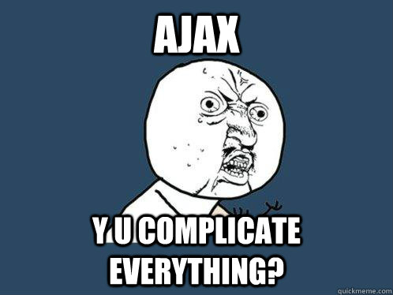
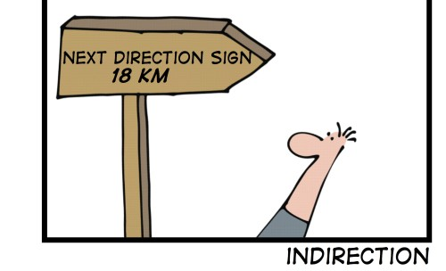

Central Question:
How do you get your dynamic data into your static html?
We have already come a long way:
<?php
function getUsername() {
// fancy db access, prepared statement, stored procedures etc...
// or that: "select * from users where id=" + $_GET['id']
// my 1337 h4xx0r sense is tingling!
return "username";
}
?>
<h1>Welcome <?php echo getUsername(); ?></h1>
What we all know
Separation of Controller / View ...
and Model and ViewModel
and Service and DTOs
and Presenter and Supervisor
and Active/Passive View
not our topic today...
Where we are
<label for="userName">Name</label>
<g:textField name="userName" value="${user?.userName}" />
<label for="status">Status</label>
<g:textField name="status" value="${user?.status}" />
<label for="email">Email</label>
<g:textField name="email" value="${user?.email}" />
Everything works fine,
what are you complaining about?
But then we introduce AJAX
e.g. for submitting a form without reloading
the whole page

we have 2 Options
respond with HTML
respond with XML/JSON
Responding with HTML
pros:
usual process of rendering markup on the server
send back any content (replaces old one)
cons:
rendering markup on server may be slow
big response
lots of re-rendering on client
input-element focus lost
difficult to update multiple parts of page
tempting to include js in response ☢
Responding with JSON
pros:
clean & you get an API for free
lightweight
update anything on client
cons:
parse & handle response (code overhead)
more js required
Let's dive in!
DEMO-TIME!
Notes
Full page refresh
Everything has to be re-requested.
Ajax post
Only specific part of page can be updated.Ajax post with custom js
Mmmm, Pasta!Ajax post with JSON response
Cleaner, but still manual coding effort.
Examples
Hacky custom form post with additional page-element update.
function submitViaJquery() {
$.ajax({
url: '/example?' + $('#userForm').serialize()
}).done(function(data) {
var target = $('#formContainer');
target.html(data);
var username = $('#userForm input[name=userName]').val();
// now update the top-bar
$('span.userName').text(username);
});
return false;
}
enter Knockout.js
Removes our ugly boilerplate js code
no more id/class just for selecting via jQ
gives us a clean client-side data model
fast, automatic updates
what you'll use:
observables (wrapped js objects, supports lists)
data binding via data-bind="text: userName"
Cons of knockout.js
another level of indirection
takes time at first pageload (if ko-only)

Where we got to
<label for="userName">Name</label>
<g:textField name="userName" data-bind="value: user.userName" />
<label for="status">Status</label>
<g:textField name="status" data-bind="value: user.status" />
<label for="email">Email</label>
<g:textField name="email" data-bind="value: user.email" />
Performance
data-bind="foreach: ..." slow with big lists
(just because of default templating system)
can be worked around, let's try it!
PLAY-TIME!
Notes
Didn't use observableCollection instead uses 2500 individual observables which are bound to 1 div each. data-bind="foreach: ..." not the observableCollection itself.
Performance II
hint
I'd recommend a real browser ;)
Security
Be careful with things like this:
var viewModel = ko.mapping.fromJS(${[msg:'', user:user] as JSON});
custom JSON Marshallers !
More about knockout.js
Try the interactive tutorial!
Awesome features to checkout:
Dependency tracking (computed props)
Many more types of bindings
Templating
Custom bindings
SPA-s anyone?